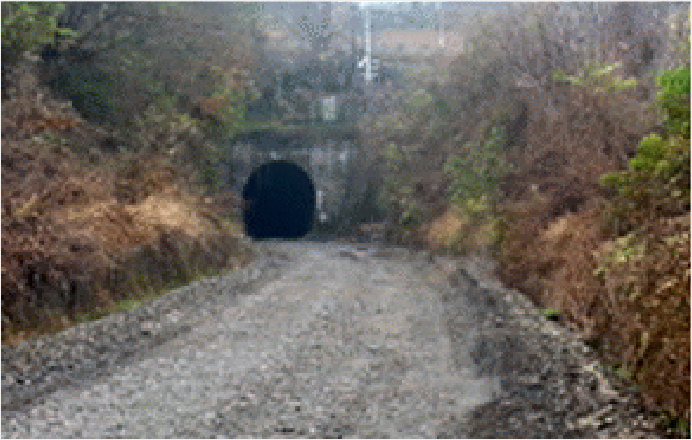
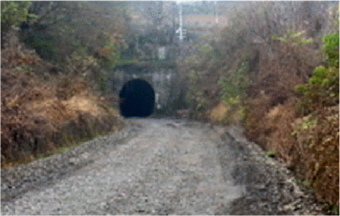

상세보기
기본정보
| 노선 | 중앙선 | 폭(m) | 신동터널 |
|---|---|---|---|
| 터널명 | 영주시 문수면 승문리 1400-1 (문수 ∼ 옹천) | 형식 | 1233 |
| 소재지 | 5 | 건설년도 | 4종말굽 |
| 연장(m) | 1233 | 폐지년도 | 1233 |
| 노선명 | 중앙선 |
|---|---|
| 터널명 | 신동터널 |
| 소재지 | 영주시 문수면 승문리 1400-1 (문수 ∼ 옹천) |
| 연장(m) | 287 |
| 폭(m) | 5 |
| 형식 | 4종말굽 |
| 건설년도 | 1941 |
| 폐지년도 | 2013 |
사진(입/출구)
 

실태조사결과
| 사용여부 | 용도 | 사용자 | 사용방식 | 유지관리 | (갱구)관리실태 | 누수 | 균열/탈락 | 토사유입 |
|---|---|---|---|---|---|---|---|---|
| 무 | 무 | 무 | 무 | 무 | 무 | 유 | 측면일부 균열 | 무 |
| 사용여부 | 용도 | 사용자 | 사용방식 | 유지관리 |
|---|---|---|---|---|
| 무 | 무 | 무 | 무 | 무 |
| (갱구)관리실태 | 누수 | 균열/탈락 | 토사유입 |
|---|---|---|---|
| 무 | 유 | 측면일부 균열 | 무 |
| 기타 특이사항 | 승문리쪽 입구는 태양광 사용허가중으로 진입 불가 | 진입로 확보여부 | 유 |
|---|---|---|---|
| 안전점검 필요여부 | 유 | 담당자 | 김기완차장 033-810-5063 |
| 폐쇄조치 필요여부 | 무 | 사용허가 가능여부(불가시 사유) | 가능 |
| 폐쇄시 문제점 | - | 추천용도 | 농산물 및 와인저장고 등 |
| 조치한 사항 | - | 비고 | 영주시에서 신동터널~용혈터널간 폐선구간은 농촌생활 체험단지 조성, 마을진입 절개구간 구름다리 설치 등이 계획되어 있음. |
| 기타 특이사항 | 승문리쪽 입구는 태양광 사용허가중으로 진입 불가 |
|---|---|
| 안전점검 필요여부 | 유 |
| 폐쇄조치 필요여부 | 무 |
| 폐쇄시 문제점 | - |
| 조치한 사항 | - |
| 진입로 확보여부 | 유 |
| 담당자 | 김기완차장 033-810-5063 |
| 사용허가 가능여부(불가시 사유) | 가능 |
| 추천용도 | 농산물 및 와인저장고 등 |
| 비고 | 영주시에서 신동터널~용혈터널간 폐선구간은 농촌생활 체험단지 조성, 마을진입 절개구간 구름다리 설치 등이 계획되어 있음. |